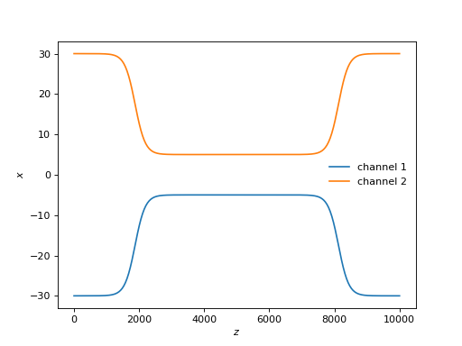
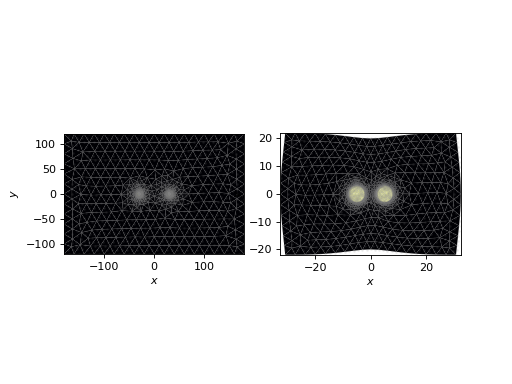
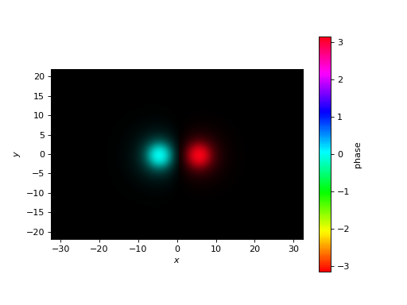
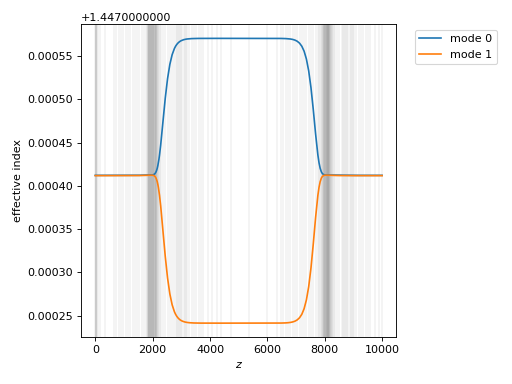
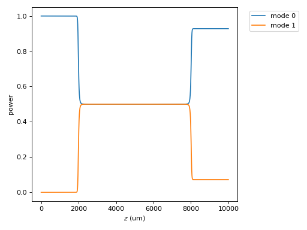
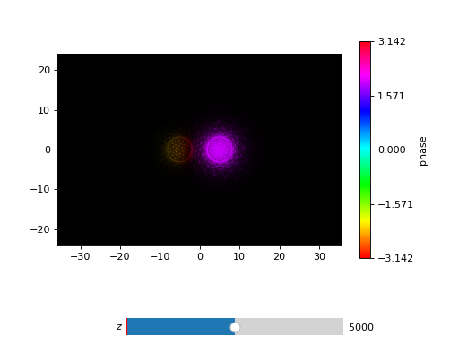
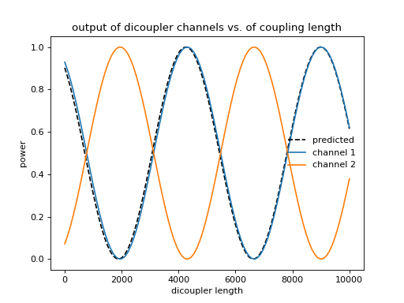

3. directional coupler#
A simple directional coupler can be formed using two embedded single-mode channels, which are temporarily brought close together along some “coupling length”. Along the coupling length, power oscillates between the channels. If the waveguide is symmetric, the net power transfer between the cores can vary from 0 to 1, and will vary sinusoidally with the coupling length.
3.1. waveguide setup#
We will use the Dicoupler class to model a \(2\times2\) directional coupler. First, let’s set our parameters.
### symmetric dicoupler propagation parameters ###
wl = 1.55 # wavelength, um
dmin = 10. # minimum center-to-center separation of single mode channels
dmax = 60. # maximum center-to-center separation of single mode channels
coupling_length = 5000. # length of coupling region (where SM channels are close)
bend_length = coupling_length/4. # approximate length of channel bends
rcore = 3. # core radius. we will simulate a symmetric dicoupler, so core radii of both channels are the same
nclad = 1.444 # cladding refractive index
ncore = nclad + 8.8e-3 # SM core refractive index
# mesh params #
core_res = 15 # no. of line segments to use to resolve the core-cladding interface(s)
clad_mesh_size = 20.0 # mesh size (triangle side length) to use in the cladding region
core_mesh_size = 1.0 # mesh size (triangle side length) to use inside the cores
tag = "test_dicoupler"
With the Dicoupler class, we specify a coupling length, not the overall waveguide length like we did with the PhotonicLantern. The overall waveguide length is auto-computed (in this basic implementation, it’s \(2\times\) the coupling length) and can be accessed through Dicoupler.z_ex.
Let’s make the dicoupler and inspect the channel paths.
from cbeam import waveguide
dicoupler = waveguide.Dicoupler(rcore,rcore,ncore,ncore,dmax,dmin,nclad,coupling_length,bend_length,core_res,core_mesh_size=core_mesh_size,clad_mesh_size=clad_mesh_size)
dicoupler.plot_paths()
(Source code, png, hires.png, pdf)
{kind=link}
{kind=link}

Next, let’s take a look at the mesh, especially how it transforms with \(z\):
import matplotlib.pyplot as plt
fig,axs = plt.subplots(1,2)
dicoupler.plot_mesh(z=0,ax=axs[0])
dicoupler.plot_mesh(z=dicoupler.z_ex/2,ax=axs[1])
plt.show()
(Source code, png, hires.png, pdf)
{kind=link}
{kind=link}

In order to improve the regularity of the triangles, the outer cladding boundary is allowed to deform as the two cores are brought closer together.
3.2. mode solving#
Next, I’ll initialize the propagator, and solve for the eigenmodes in the middle of the waveguide.
from cbeam import propagator
dc_prop = propagator.Propagator(wl,dicoupler,Nmax=2)
neff,modes = dc_prop.solve_at(z=dicoupler.z_ex/2)
dc_prop.plot_cfield(modes[1],mesh=dc_prop.mesh)
(Source code, png, hires.png, pdf)
{kind=link}
{kind=link}

This is the antisymmetric mode in the coupling region.
3.3. characterization#
Next, let’s characterize and look at the coupling coefficients. For reference, this takes around 15 seconds on my laptop.
# comment/uncomment below as necessary
# dc_prop.z_acc = -1 # loosen accuracy
dc_prop.characterize(save=True,tag=tag)
# dc_prop.load(tag)
We’ll look at the effective indices of the modes first:
dc_prop.plot_neffs()
(Source code, png, hires.png, pdf)
{kind=link}
{kind=link}

The two eigenmodes are essentially degenerate at the beginning and end of the waveguide; in the middle, the degeneracy splits. (Aside: if the boundaries of single-mode cores were less resolved, we might actually see the modes cross in eigenvalue, which complicates the characterization).
Next, let’s look at the coupling coefficients.
dc_prop.plot_coupling_coeffs()
(Source code, png, hires.png, pdf)
{kind=link}
{kind=link}
We see two large spikes, corresponding to a shift in eigenbasis from the individual channel modes to the symmetric and antisymmetric modes of the coupling region.
3.4. propagation#
Let’s launch light into one end and look at how the mode powers change with \(z\).
u0 = [1,0]
zs,us,uf = dc_prop.propagate(u0)
dc_prop.plot_mode_powers(zs,us)
(Source code, png, hires.png, pdf)
{kind=link}
{kind=link}

We see that the light, initially confined in one of the channels, couples evenly into both modes within the couplng region, and then splits.
You can also try tracking the wavefront through the waveguide, e.g. with
dc_prop.plot_wavefront(zs,us,zi=dicoupler.z_ex/2)
(Source code, png, hires.png, pdf)
{kind=link}
{kind=link}

In the coupling region, you’ll see the field oscillate between the two channels with \(z\).
3.5. varying the coupling length#
Suppose we want to see how the splitting ratio changes with the coupling length. We can play a trick that allows us to reuse the above calculation without rerunning characterize. The idea is to apply a transformation to the \(z\) array, preserving monotonicity, to change the length of the waveguide. Below is an example.
# we will run 100 dicoupler simulations with different lengths
stretch_amounts = np.linspace(0,10000,100)
u0 = [1,0]
pwrs = []
for i,stretch in enumerate(stretch_amounts):
zs = np.copy(dc_prop.zs)
zs[np.argmax(zs>=dicoupler.z_ex/2):] += stretch # stretch out the z array
dc_prop.make_interp_funcs(zs) # remake the interpolation functions
zs,us,uf = dc_prop.propagate(u0,zs[0],zs[-1]) # rerun the propagator
pwr = np.power(np.abs(uf),2)
pwrs.append(pwr)
pwrs = np.array(pwrs)
pred_period = 4735 ## predicted oscillation period, see next section for the formula ##
zmax = stretch_amounts[np.argmax(pwrs[:,0])] # translating the sinusoid to match - not trying to match absolute phase (see next section)
# plot predicted cos^2 dependence
plt.plot(stretch_amounts,np.power(np.cos(np.pi/pred_period*(stretch_amounts-zmax)),2),color='k',ls='dashed',label="predicted")
plt.plot(stretch_amounts,pwrs.T[0],label="channel 1")
plt.plot(stretch_amounts,pwrs.T[1],label="channel 2")
plt.legend(loc='best',frameon=False)
plt.xlabel("dicoupler length")
plt.ylabel("power")
plt.title("output of dicoupler channels vs. of coupling length")
plt.show()
(Source code, png, hires.png, pdf)
{kind=link}
{kind=link}

In the above plot, I also show a “predicted” power output as a function of length. The derivation can be found in fiber optics textbooks. For an ideal, symmetric dicoupler with light injected solely into channel 1, the output power in channel 1 is
For a symmetric dicoupler with circular cores, the oscillation wavenumber \(\kappa\) has an empirical approximation [1]:
for \(k\) the free-space wavenumber, \(r\) the single-mode channel core radius, \(d\) the inter-core spacing along the coupling length, and \(n_{\rm clad}\) the refractive indexing of the cladding. The fiber \(V\) number is defined as
where \(n_{\rm core}\) is the refractive index of the core material. The empirical constants are defined through:
The above empirical formula has a quoted accuracy of <1% for \(1.5\leq V \leq 2.5\) and \(2\leq d/a \leq 4.5\). For our dicoupler parameters, which fall in this range, the predicted period is \(\sim 4735 \mu {\rm m}\).
References
[1] R. Tewari and K. Thyagarajan, “Analysis of tunable single-mode fiber directional couplers using simple and accurate relations,” in Journal of Lightwave Technology, vol. 4, no. 4, pp. 386-390, April 1986, doi: 10.1109/JLT.1986.1074731